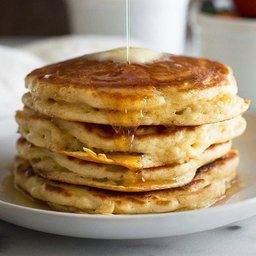

Breakfast pancakes

Could you imagine something better than pancakes for weekend breakfast?
This recipe will show you easy it is to make them in less then 30 minutes!
Ingredients
- 2 cups of all-purpose flour
- 2 teaspoons of baking powder
- 1/4 teaspoon of salt
- 1 tablespoon of sugar
- 2 eggs
- 2 cups of milk
- 2 tablespoons of melted butter
- 2 teaspoons of unmelted butter (for cooking on a pan)
Steps
- Preheat oven to 200 degrees of Celsius (392 F)
- Whisk together flour, sugar, salt and baking powder in a small bowl.
- In medium bowl, stir together milk, eggs and melted butter. Do not overmix it, whisk until just moistened.
- Place 2 teaspoons of unmelted butter on a heated pan, ladle our batter onto a pan, making pancakes of any size you prefer.
- Flip pancakes after bubbles rise to surface and bottom of a pancake is brown
- Cook until second side is also lightly browned.
- Serve with mix of berries, maple sirup, whip cream or any other preferred toppings :)
*Inspired by this recipe
Back to Home